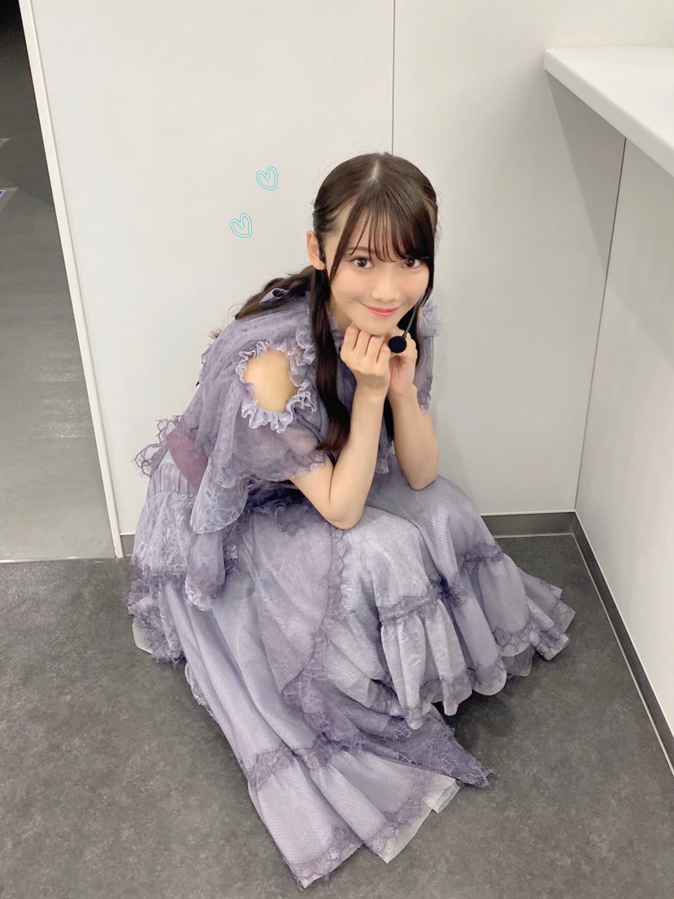
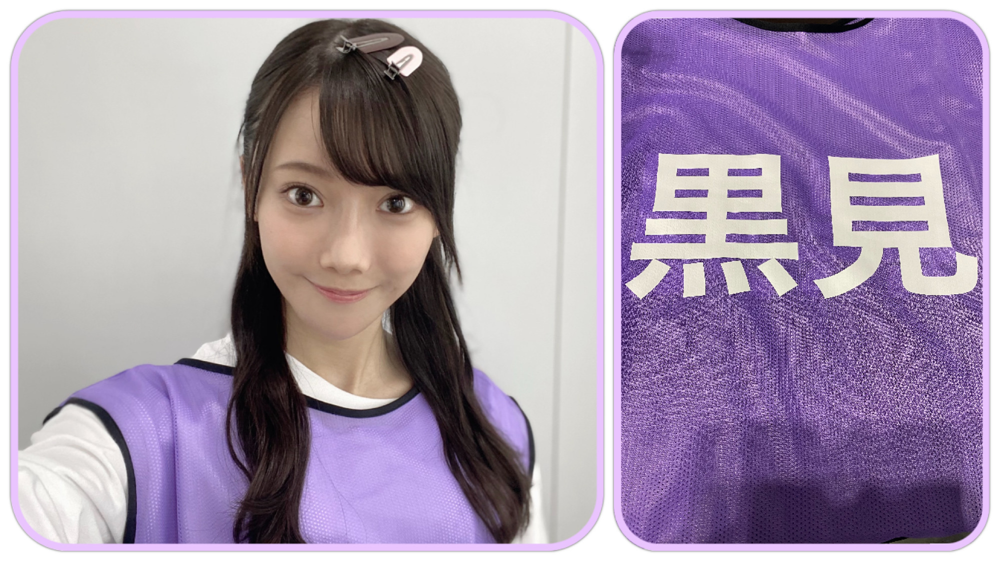
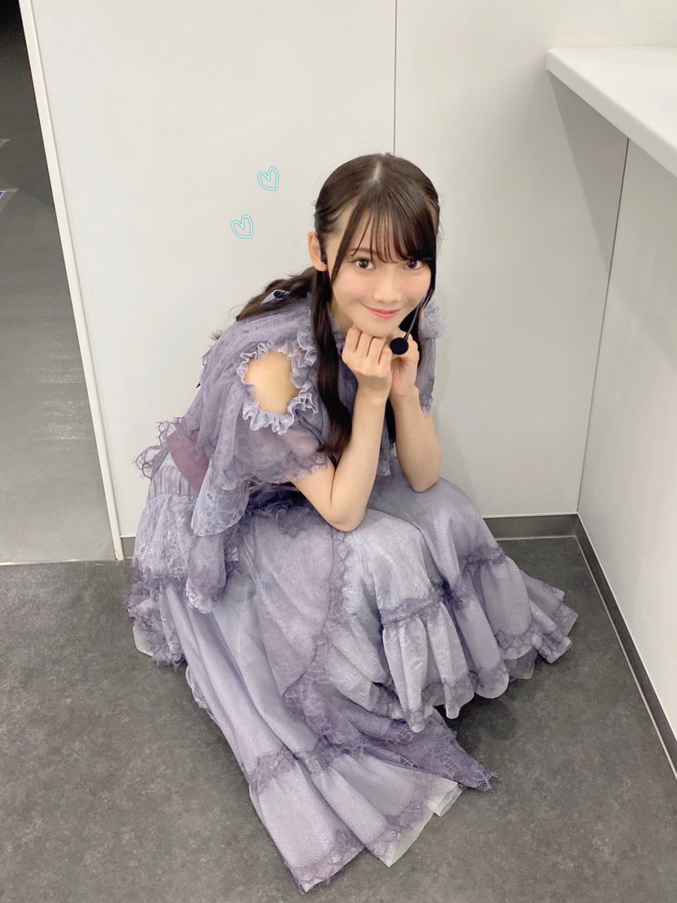
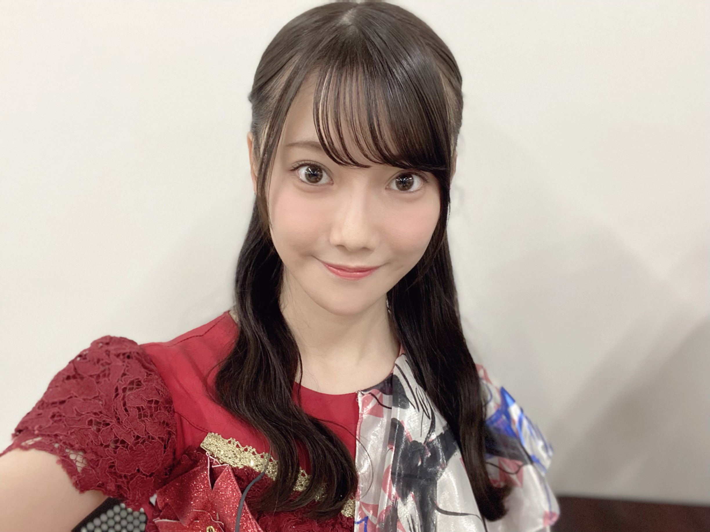
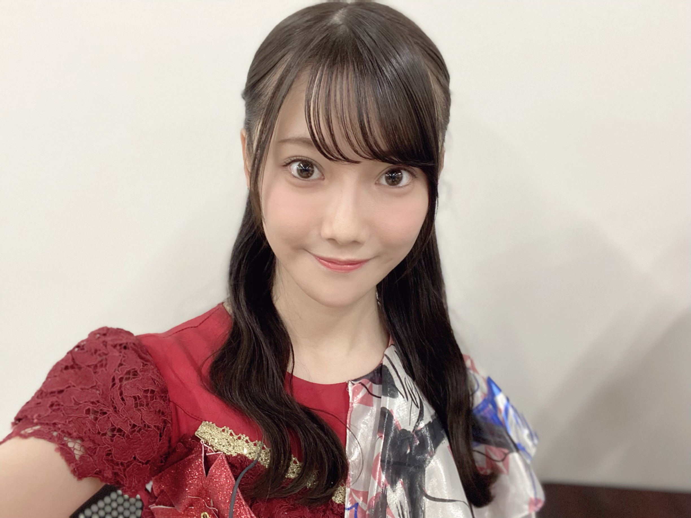
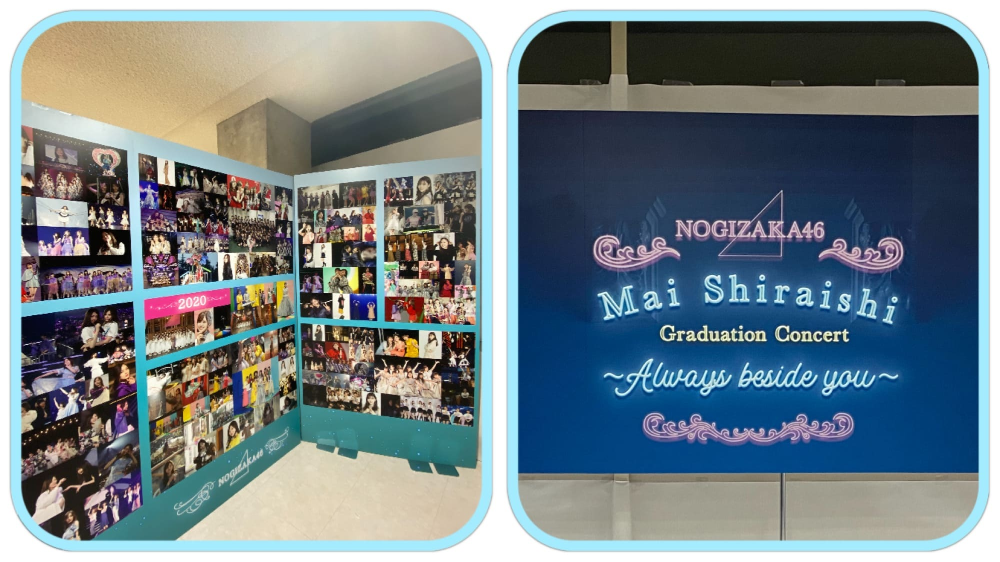
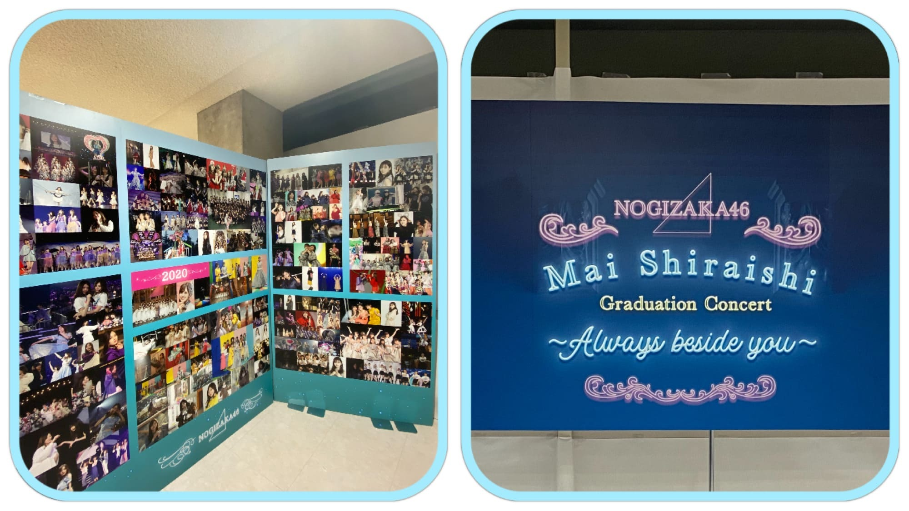
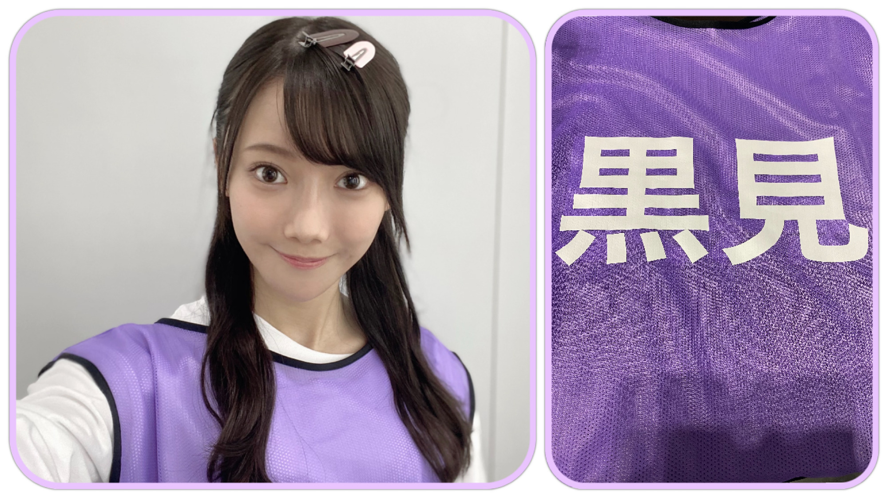

2020/1029Thu『さよならをありがとう。』 ☺︎ 黒見明香(16)
大切な一日。
乃木坂46 新４期生の黒見明香です。
すこーしだけ自己紹介させてください✨
♪:*:･･:*:･･:*:･･:*:･･:*:･･:*:･♪:*:･･:*:･･:*:･･:*:･･:*:･･:*:･♪
黒見 明香（くろみ はるか）
2004年1月19日生まれ 16才
香港生まれ・東京都出身です
あだ名： くろみん・黒見ちゃん
3の倍数9・6・3(くろみ)
と覚えてもらえたら嬉しいです♪
♪:*:･･:*:･･:*:･･:*:･･:*:･･:*:･♪:*:･･:*:･･:*:･･:*:･･:*:･･:*:･♪


-:-:୨୧:-:- 初めての乃木坂カラーのビブス✨
ブログやお手紙で、たくさんのコメントや感想送って下さり
本当にありがとうございます✩︎⡱
今回、初めてコメントしました！というあなたも、
こないだの続きだよー！と教えて下さるあなたも、
大切な時間を使ってお話しして下さり
本当にありがとうございます✨
あなたに出逢えた奇跡に、感謝しながら、
大事に、一つずつ全部読ませて頂いています((〃ω〃))
皆さんのことを知ることが出来る、
私の１日の中で『１番幸せな時間』です♩
明日は、馬車に乗るお姫様 璃果ちゃんですよー♬
読んでくださり、本当にありがとうございます☺︎
次回も、会えたら嬉しいなぁ✨
またねヾ(･ω･*)
くろみはるか☺︎
☆ 本日のあなたのラッキーナンバー：❹ と ❻
♪:*:･･:*:･･:*:･･:*:･･:*:･･:*:･♪:*:･･:*:･･:*:･･:*:･･:*:･･:*:･♪
・
・
・
＜ちょこっとアンコール♬笑＞
そして、お誕生日を迎えるあなたへ・・
✨HAPPY BIRTHDAY✨
どうぞ素敵な一年になりますよう✩︎⡱
♪:*:･･:*:･･:*:･･:*:･･:*:･･:*:･♪:*:･･:*:･･:*:･･:*:･･:*:･･:*:･♪
ここまで読んでくださったアナタ、ほんとうにありがとう♡
またねヾ(･ω･*)
白石麻衣さんの卒業コンサート
『乃木坂46 NOGIZAKA46 Mai Shiraishi Graduation Concert 〜Always beside you〜』
本当にありがとうございました。
♬ *。♩*。♬
余韻の覚めない中、
ココを 見てくださり ありがとうございます☺︎
乃木坂46 新４期生の黒見明香です。
すこーしだけ自己紹介させてください✨
♪:*:･･:*:･･:*:･･:*:･･:*:･･:*:･♪:*:･･:*:･･:*:･･:*:･･:*:･･:*:･♪
黒見 明香（くろみ はるか）
2004年1月19日生まれ 16才
香港生まれ・東京都出身です
あだ名： くろみん・黒見ちゃん
3の倍数9・6・3(くろみ)
と覚えてもらえたら嬉しいです♪
♪:*:･･:*:･･:*:･･:*:･･:*:･･:*:･♪:*:･･:*:･･:*:･･:*:･･:*:･･:*:･♪

-:-:୨୧:-:- 乃木坂カラーの 白石麻衣さん♡にとって最後の歌衣装、そして私に取って初めての歌衣装...
開演前、キャプテンの真夏さんに代わって
白石さんが 円陣の「掛け声」をかけて下さいました。
みんな大好きな、大好きな白石麻衣さん・・・
リハーサルから、涙しちゃうメンバーも多く
こみあげる想いを必死で抑えながら
笑顔になろうと頑張っていました。
＊
白石さんが、最後に、
『９年間、楽しい思い出ばかりで、
こんな幸せでいいのかなと思う...』
と、お話しして下さいました... ｡ﾟ(｡ﾉω＼｡)ﾟ｡
嬉しいことも辛いことも、共に乗り越えてきて下さった
大好きな先輩方、支えて下さったたくさんのスタッフの皆さま、
そして
応援して下さり、力になって支えて下さった
大切なファンの皆さま。
＊
最後の1日を、大切な先輩の卒業式を
一緒に見届けて下さり
本当にありがとうございました。
♪:*:･･:*:･･:*:･･:*:･･:*:･･:*:･♪:*:･･:*:･･:*:･･:*:･･:*:･･:*:･♪


-:-:୨୧:-:- 「世界で一番孤独なLover」で着せて頂いた、大切な深紅の衣装です
キャプテンの真夏さん♡は
いっぱい、いっぱい、自分の涙を我慢して、
『みんなで声出して、盛り上げていこうねーっ！』
と明るく笑顔で、メンバーを激励し、お話してくれました...
＊
本番当日も、ギリギリまで、
白石さんと真夏さんのお二人が
「ちょっとやめてよー♡」といつもどおりの、
可愛く仲良くお話しされていらっしゃるお姿にも、
"やっぱ乃木坂だな"と、なんだか胸がジーンとしてしまいました...\\\
＊
ガールズルールでは
送ってくださった皆さんの掛け声と一緒に、
全員で笑顔で✨本編を終えることが出来て、
直接会場で会うことは叶わなくても、
皆さんのパワーを、お姿をいっぱい感じて、
本当に幸せでした。応援ありがとうございます。
♬ *。♩*。♬
楽屋に入っていらっしゃった白石さんが、
たまたま わたしの目の前に
座ってくださいました(*´-`)♡
白石さんご自身で、
心を込め一つ一つ、
９年間の思いをかみしめるように
メイクをされ、準備をされていらっしゃる
凛とした美しいお姿✨に
目を奪われてしまいました。。
＊
一人、勇気をふりしぼって、
ご挨拶させて頂いたとき、
柔らかい笑顔で、優しくお話しして頂いたこと、
ずっとずっと忘れません。
大切な想い出です✩︎⡱
＊
これからも、ずっと乃木坂を
私たちの成長を、見守っていて下さる素敵な大好きな方です。
＊
白石さんが、先輩方が連れてきて下さった坂を
これからも、あなたも一緒に、
悩んだり遠回りしたりしながらも、
上ってくれたら嬉しいです(*´-`)
♪:*:･･:*:･･:*:･･:*:･･:*:･･:*:･♪:*:･･:*:･･:*:･･:*:･･:*:･･:*:･♪

-:-:୨୧:-:- 愛される白石麻衣さん♡の 思い出と愛が詰まっている会場の装飾✩︎⡱
♪:*:･･:*:･･:*:･･:*:･･:*:･･:*:･♪:*:･･:*:･･:*:･･:*:･･:*:･･:*:･♪

-:-:୨୧:-:- 愛される白石麻衣さん♡の 思い出と愛が詰まっている会場の装飾✩︎⡱
長いたくさんの歴史の、最後の年に、
ご一緒させていただけたこと、
一生忘れません。。。
会場のホールにも、お花にも、
白石麻衣さんを応援する皆さんからの
愛がたくさん、たくさん溢れていました (*ˊᵕˋ*)੭
＊
わたし自身は、白石さんの優しいお顔を見て、
泣かないよう...笑顔がぎこちなくなっていたり...
たくさんの反省があります。。。
＊
それでも、乃木坂のメンバーとして
教えて頂いた大切なこと
先輩たちが見せて下さった美しいお姿、
ひたむきさ、努力、感謝、そして笑顔・・・
必ず、大切な乃木坂に、少しでも役立てる人となれるよう
教えに生かして、精一杯努めます (. ≧ω≦)ﾉ
♬ *。♩*。♬
⚫︎笑顔で見送ってあげてください。私もパソコンの前で見送ります！！
⚫︎らじらーで徳井さんが言ってた「卒業は何かの入学」というのを参考に、これからの活躍を応援。
⚫︎らじらーで徳井さんが言ってた「卒業は何かの入学」というのを参考に、これからの活躍を応援。
ステップアップなんだよ、夢を叶えて旅立つんだよ、ジコチューのように「人生はあっという間だ！」なんだよ・・・と、コメントで励ましやアドバイスたくさん教えてくださって本当にありがとうございます。
一つ一つ大切に、胸に刻んで、
今、寂しい気持ちを奮い立たせています><
⚫︎乃木坂工事中で中田花奈さんがボードに「くろみ」って書いてくれたね！凄いね！
⚫︎お二人は、今後も芸能活動されるみたいですので、またご一緒出来たら良いですね。
花奈さんの解答びっくりしました！((〃ω〃))
そして嬉しくて、
しばらく動けなかったです。。。
"乃木坂をよろしくね(・ωｰ)" と冗談まじりに、
掛けてくださった言葉を、何度も何度も思い出しています。
＊
いつの日か、またご一緒させていただける日が来るよう
わたしも全力で頑張らなくちゃですね！
寂しいですが・・・
ご卒業おめでとうございます✨
白石麻衣さん♡中田花奈さん♡ お二人のこれからが
幸せあふれる楽しい毎日でありますように (*ˊᵕˋ*)੭
♪:*:･･:*:･･:*:･･:*:･･:*:･･:*:･♪:*:･･:*:･･:*:･･:*:･･:*:･･:*:･♪

-:-:୨୧:-:- 初めての乃木坂カラーのビブス✨
今月の 「TOKYO IDOL FESTIVAL オンライン2020」そして
「乃木坂46 NOGIZAKA46 Mai Shiraishi Graduation Concert
〜Always beside you〜」
と、練習するにあたって、
初めての「乃木坂カラーのビブス✨」を
使わせていただきました！
＊
坂道研修生で、初めて"東名阪ツアーをさせて頂ける"と聞いて、
真っ白なビブスを頂いたあの日の感動も、
乃木坂カラーの、いつも映像で見て憧れていた
先輩方とお揃いのビブスを頂いたこの日の感動も、
昨日のことにように、鮮明に覚えています。
＊
新4期の5人で
「うわぁ....((〃ω〃))」と目を見合わせて幸せをかみしめていました。
♬ *。♩*。♬
⚫︎オンラインだけど、見送ることが出来てよかったです！
ライブビューイングのチケットも当てられず、
"あぁ...今頃Overtureかなぁ。。。" と自分が情けなく、
自分の運のなさに、悔し涙した経験を思い出しています。
今も時々、願いを込めながら、息を潜めて、
チケット当落メールを確認する夢を見る日があります...\(//∇//)\
＊
直接ライブで皆さんのお顔を見て
楽曲を伝える、一緒に空間を共有することが出来なくて
とても悔しいけれど,,,
この景色を、表情を
オンラインでたくさんの方に、
お届けできたこと、
白石麻衣さんの卒業する日を
見守っていただけたことを、嬉しく思います☺︎
＊
＊カタカナ苦手な私には、
「ライビュヴーインあるって！」友達に送って
「なんか間違ってるけど、察した」・・・Σ（ﾟдﾟll）
と返された思い出があります\(//∇//)\
『らいぶ・びゅーいんぐ』 難問ですよね！笑
（今、辞書で調べてから書きました汗）
♪:*:･･:*:･･:*:･･:*:･･:*:･･:*:･♪:*:･･:*:･･:*:･･:*:･･:*:･･:*:･♪
【 ノギザカスキッツACT2 】
とってもありがたいことに、
11月10日スタート『２nd シーズン』
放送させて頂くことが決定しましたー！
３期生の先輩方も参戦されてパワーアップです✩︎⡱
⚫︎先輩方を見たら、一緒にお芝居をしたら、また何か「ヒント」になるかもしれないね。
4期生の皆んなで、さすが！先輩方はすごいね✨と
演技力・トーク力と感動していました〜
私たちもパワーアップしなければですね！
楽しんで、頑張るねー (*ˊᵕˋ*)੭
♬ *。♩*。♬
⚫︎「an・an」さんに、来月メンバー皆で登場と聞きました。初の女性誌かな!?
こちらも、嬉しすぎることに、全員登場させていただきます♪
またオフショットなど載せさせてくださいねヾ(･ω･*)o
♪:*:･･:*:･･:*:･･:*:･･:*:･･:*:･♪:*:･･:*:･･:*:･･:*:･･:*:･･:*:･♪
♪:*:･･:*:･･:*:･･:*:･･:*:･･:*:･♪:*:･･:*:･･:*:･･:*:･･:*:･･:*:･♪
ブログやお手紙で、たくさんのコメントや感想送って下さり
本当にありがとうございます✩︎⡱
今回、初めてコメントしました！というあなたも、
こないだの続きだよー！と教えて下さるあなたも、
大切な時間を使ってお話しして下さり
本当にありがとうございます✨
あなたに出逢えた奇跡に、感謝しながら、
大事に、一つずつ全部読ませて頂いています((〃ω〃))
皆さんのことを知ることが出来る、
私の１日の中で『１番幸せな時間』です♩
ー " 夢を見るなら君と一緒がいい " (*´-`)
直接お話しできる時が、 待ち遠しいです✩︎⡱
＊
寝不足が続いたり、すっかり肌寒くなってきちゃって、
なんだか体調イマイチだよー、疲れちゃったよーって方も
本当に、今日も一日 お疲れ様でした✩︎⡱
きっと心も、身体も、しんどい時もあるかと思います。。
どうぞ、皆さんが 少しでも
ひとときリラックスできますように...✩︎⡱
と願っています(*´-`)
初めて会える日を、楽しみに待っています♪
＊
かぼちゃの馬車に乗ってきた奈於ちゃん♡
＊
寝不足が続いたり、すっかり肌寒くなってきちゃって、
なんだか体調イマイチだよー、疲れちゃったよーって方も
本当に、今日も一日 お疲れ様でした✩︎⡱
きっと心も、身体も、しんどい時もあるかと思います。。
どうぞ、皆さんが 少しでも
ひとときリラックスできますように...✩︎⡱
と願っています(*´-`)
初めて会える日を、楽しみに待っています♪
＊
かぼちゃの馬車に乗ってきた奈於ちゃん♡
明日は、馬車に乗るお姫様 璃果ちゃんですよー♬
読んでくださり、本当にありがとうございます☺︎
次回も、会えたら嬉しいなぁ✨
またねヾ(･ω･*)
くろみはるか☺︎
☆ 本日のあなたのラッキーナンバー：❹ と ❻
♪:*:･･:*:･･:*:･･:*:･･:*:･･:*:･♪:*:･･:*:･･:*:･･:*:･･:*:･･:*:･♪
・
・
・
＜ちょこっとアンコール♬笑＞
♬ *。♩*。♬
⚫︎私は櫻坂46新2期生とのエピソードも教えてください。
○ライブ前にも 激励のメッセージを送ってくれて
すごく力になりました！温かい大切な仲間です☺︎
♬ *。♩*。♬
⚫︎和ラーにお湯を入れて、3分待って、ふたをとったら、黒見ちゃんのサインが出てきた。
○嬉しいー (*ˊᵕˋ*)੭
いっぱい召し上がってくださいね✨
♬ *。♩*。♬
⚫︎次回ブログは10月29日。去年なら研修生ツアー初日の前日ですね。
○もう一年ですね。とっても緊張していましたー汗
大沼晶保ちゃんと部屋でドキドキしていました☺︎
♬ *。♩*。♬
♬ *。♩*。♬
⚫︎くろみん勉強頑張って(/･ω･)/あっ、新4期生の中で「おバカキャラ」と聞かれたら、「くろみん」と選んだ子も確か居たよね？（笑）
⚫︎追試はもう終わりましたか？ まだでしたら、がんばってください！
○今日数学のテスト受けてきたよー\(//∇//)\笑
⚫︎追試はもう終わりましたか？ まだでしたら、がんばってください！
○今日数学のテスト受けてきたよー\(//∇//)\笑
頑張ります！ありがとうー☺︎
♬ *。♩*。♬
⚫︎今日はフィンランドのサンタクロースから大切なお知らせがあったよ。
「クリスマスは中止しない」（byサンタ）コロナ渦で心配だったけど、良かったね。くろみん。何をお願いする？プレステ？ステッキのリベンジ？
♬ *。♩*。♬
⚫︎今日はフィンランドのサンタクロースから大切なお知らせがあったよ。
「クリスマスは中止しない」（byサンタ）コロナ渦で心配だったけど、良かったね。くろみん。何をお願いする？プレステ？ステッキのリベンジ？
○本当に良かったです((〃ω〃))
子どもたちも幸せになるといいなー✨
わたしも、こっそり熟考します笑フフ
♬ *。♩*。♬
＜ゲームコーナー☺︎＞
＜ゲームコーナー☺︎＞
⚫︎ プロスピのイベントのキャラバンは余裕があれば
走ったほうがいいと思うよ！
⚪︎キャラバン走ったよ！無事Sランク契約書もらえたよ〜☺︎
⚫︎ 僕は、プロスピでは、エナジーが少なくてあまり引けてない。でもこれから頑張ってエナジーを貯めて頑張るね。
⚪︎うん！エナジー貯めるの時間かかるけど、一緒に頑張ろう！
⚫︎ 黒見ちゃんはアニバーサリーの無料ガチャで誰引いたの？
⚪︎もともと持ってた選手だよー！
今回ので極み＋になったよー☺︎
⚫︎プロスピ、フレンドになって〜
いつかあなたとフレンドになれたらいいなぁ☺︎
フレンドになったら一緒にガチャとか引きたいなぁー！
⚫︎ 月曜日はドラフト会議があったけど、くろみんはチェックした？
⚪︎見たよー！残念ながら指名されなかった選手もこれからも活躍が楽しみだね！あなたはどうだった？
♬ *。♩*。♬
夏目漱石のお話、のぎ動画のコメンタリー観たよ！炭治郎みたいというお話、朗読劇のこと、席替えのエピソード、辛い物のお話、かつ家の感想、先輩方の大切な言葉、BOØWYさんの曲の想い出、Perfumeさん、バンドACID BLACK CHERRYさん、Mrs. GREEN APPLEさんのこと、前髪のお話、深川麻衣さん♡悠理ちゃん♡のこと、聖地巡りのお話、Wピースアレンジ方法、ハロウィンのお話も、蜜香屋さん、思いやりを表す恕・努のお話、麻雀のお話も(奈於ちゃんに教わりたいな☺︎)ありがとうございます！一つ一つ大切に読ませて頂いています。
お仕事やアルバイト、部活が大変だよー！勉強や模試だよー、回復中だよーという方も、大変だよねー！お疲れ様！一緒に頑張ろうねーヾ(･ω･*)o
タオル来たよ！ハロウィン写真申し込んだ！らじらーで気になって来たよー、ファンで良かった書いてくれたお話、じゃあね。の歌詞のこと、かっきーのMCの「みんなまいやんに憧れてオーディションを受けた」というお話も、とても心に滲みています(；ω；)
タオル来たよ！ハロウィン写真申し込んだ！らじらーで気になって来たよー、ファンで良かった書いてくれたお話、じゃあね。の歌詞のこと、かっきーのMCの「みんなまいやんに憧れてオーディションを受けた」というお話も、とても心に滲みています(；ω；)
♬ *。♩*。♬
＜お誕生日おめでとうございます✨＞
◎10月31日金川紗耶ちゃん♡
ダンスが上手で、スタイルも美しく、女性らしいところにも憧れています。
よくダンスを一緒に復習してくれてありがとう☺︎大好きだよー。
◎11月1日は渡辺みり愛さん♡
「わからないことあったら遠慮せずに聞きにおいで」と言ってくださり、後輩からも愛されている心優しく、カッコいい憧れのお姉さんです。
そして、お誕生日を迎えるあなたへ・・
✨HAPPY BIRTHDAY✨
どうぞ素敵な一年になりますよう✩︎⡱
♪:*:･･:*:･･:*:･･:*:･･:*:･･:*:･♪:*:･･:*:･･:*:･･:*:･･:*:･･:*:･♪
ここまで読んでくださったアナタ、ほんとうにありがとう♡
またねヾ(･ω･*)
2020/10/29 18:12
コメント(234)
こんばんは
乃木恋のイベントやってるかな？ うさぎコレクション、一つ目でいきなりくろみちゃん出たよ！ これは、これからもくろみちゃんを応援しなさいって暗示なのかな…(笑)
新四期生が参加するときの紹介動画にあった、うさ耳はこれだったんだね～。とっても可愛いよ！
乃木恋のイベントやってるかな？ うさぎコレクション、一つ目でいきなりくろみちゃん出たよ！ これは、これからもくろみちゃんを応援しなさいって暗示なのかな…(笑)
新四期生が参加するときの紹介動画にあった、うさ耳はこれだったんだね～。とっても可愛いよ！
くろみん、こんばんは(・∀・)
今日は大阪で都構想の投票があったから近くの小学校まで投票に行ってコンビニ寄って帰宅したら荷物が届いてて中身を開けたらビックリΣ(ﾟﾛﾟ;)乃木坂どこへ1.2購入特典DVD別冊乃木坂どこへが当たってました。
早速みてみたけどめっちゃ面白かった、内容は書かないけど告白めっちゃ可愛かったしくろみんのカミングアウトめっちゃ笑った、流石やねくろみん。
良い日曜日になりました！またコメントするね、くろみんお疲れさまです。(*≧∇≦)ﾉ
今日は大阪で都構想の投票があったから近くの小学校まで投票に行ってコンビニ寄って帰宅したら荷物が届いてて中身を開けたらビックリΣ(ﾟﾛﾟ;)乃木坂どこへ1.2購入特典DVD別冊乃木坂どこへが当たってました。
早速みてみたけどめっちゃ面白かった、内容は書かないけど告白めっちゃ可愛かったしくろみんのカミングアウトめっちゃ笑った、流石やねくろみん。
良い日曜日になりました！またコメントするね、くろみんお疲れさまです。(*≧∇≦)ﾉ
くろみん、こんばんは！
コメント、失礼します！
もう11月になっちゃったね。
2020年も残すところ2ヶ月。
あっという間に感じるなぁ。
そして今日はみり愛さんの誕生日だね。
ダンスが上手くて優しいから、後輩に頼りにされてるのか。
幸せな1年にして欲しいよね。
そう言えば昨日のおはつちゃんと一昨日の沈黙の金曜日はチェックした？
2人とも初めての経験に緊張しつつも頑張ってたよね。
どちらも面白かった。
沈金はしばらく出れないけど、おはつちゃんはくろみんにももうすぐ出番がありそうで楽しみだなー。
それでは、この辺で。
おやすくろみんー
コメント、失礼します！
もう11月になっちゃったね。
2020年も残すところ2ヶ月。
あっという間に感じるなぁ。
そして今日はみり愛さんの誕生日だね。
ダンスが上手くて優しいから、後輩に頼りにされてるのか。
幸せな1年にして欲しいよね。
そう言えば昨日のおはつちゃんと一昨日の沈黙の金曜日はチェックした？
2人とも初めての経験に緊張しつつも頑張ってたよね。
どちらも面白かった。
沈金はしばらく出れないけど、おはつちゃんはくろみんにももうすぐ出番がありそうで楽しみだなー。
それでは、この辺で。
おやすくろみんー
くろみんお疲れ様です！
まいやんも遂に卒業されましたネ。
やはりいつ経験しても寂しく悲しいものです。
運命とは、どうしてこんなにも切なくできているんだろう。
人が幸せになりたいと願う時、どうして誰かが悲しまなければならないんだろうネ。
でもその悲しみが人を強くするのかな。
みんなから愛され、憧れや理想の存在だったまいやんが居なくなったって、みんなはちゃんとやれる。いやっ、彼女が居ない分、強くなろうとする！
きっと今まで卒業していったメンバーもそうだと思います。大きくなっていく乃木坂46、期待の後輩、頼れる後輩、みんなになら任せられる。もっともっと素敵な景色を見せてくれると、そう思ってさらに高い夢に向かって旅立ち、思いきって挑戦できるのだと思います(^^)
それにこれは永遠の別れじゃないんです！
約束なんてなくても待っていてくれる人がいるからネ！
いつもたくさんのコメントに、質問に答えてくれてありがとうございます♪
やはりオンラインライブでは物足りないものもあると思いますが、最後をみんなでちゃんと送り出してあげられることが出来て良かったなと♪
愛する人への一番の恩返しは、成長した自分を見せることです！
まいやんが卒業したことがネット記事とかでみると寂しくなり、FUNKY MONKEY BABYSの『ありがとう』という曲が僕の頭の中で流れてきます。
"眠れない夜を 笑い合った日々を
君と見た景色を 僕は忘れない
さりげない言葉に その手の温もりに
僕を照らしてくれた笑顔にありがとう"
"いくつもの思い出が愛しくて
立ち止まってしまいそうになる
それでも僕は歩いて行かなくちゃ
今よりももっと輝くため"
"きっとこの涙も 笑顔に変わってゆく
いつだって僕らは そう信じていた"
笑顔でまた会える日を夢見て、今日という日を大切に生きていきましょう(^^)
纏まりのない読みにくいコメントで申し訳ないです…
いつも応援してます！
バイト疲れたよー
お知らせしたいことがあったので今回のブログ2回目の
コメントします！
別冊乃木坂どこへ当選しましたー！！嬉しい！！！
内容は当選した人だけの秘密だと思うので詳しくは言いません
が、くろみんの告白・カミングアウトどちらも素晴らしいもの
でした！お父さん見てるかな？
いつかは乃木坂どこへのような街ぶら番組を再度見たいです！
今度は16人全員でね！
それでは、また！
コメントします！
別冊乃木坂どこへ当選しましたー！！嬉しい！！！
内容は当選した人だけの秘密だと思うので詳しくは言いません
が、くろみんの告白・カミングアウトどちらも素晴らしいもの
でした！お父さん見てるかな？
いつかは乃木坂どこへのような街ぶら番組を再度見たいです！
今度は16人全員でね！
それでは、また！
黒見さん、おはようございます。
近くのショッピングセンターに行くと、もうハロウィンの形跡は跡形もなくクリスマスケーキやおせちの予約でいっぱいでした。
なにか慌ただしいですね笑
昨日はみり愛さんのお誕生日でしたね。
８年も在籍されてまだ21歳というのも驚きですが、それだけ長く頑張れるのはやはり乃木坂さんが素晴らしいグループだからでしょうね。
以前みり愛さんとお話されたと書かれていましたがなにかメッセージは贈られましたか？
寒くなってきましたので風邪などひかないようにお気をつけください。
それでは今日も良い１日を！
近くのショッピングセンターに行くと、もうハロウィンの形跡は跡形もなくクリスマスケーキやおせちの予約でいっぱいでした。
なにか慌ただしいですね笑
昨日はみり愛さんのお誕生日でしたね。
８年も在籍されてまだ21歳というのも驚きですが、それだけ長く頑張れるのはやはり乃木坂さんが素晴らしいグループだからでしょうね。
以前みり愛さんとお話されたと書かれていましたがなにかメッセージは贈られましたか？
寒くなってきましたので風邪などひかないようにお気をつけください。
それでは今日も良い１日を！
くろみん
おはよー☺
５連休続いてますよー(笑)
後３日今日は、雨予報なので家で見れてない番組を見ようかなと思ってます！
昨日の乃木中の花奈さんの回！
面白かったね！最後の最後まで自分たちの見てきた花奈さんで何だか嬉しかったな！
皆もカエル頑張って持ってたね(笑)(笑)
花奈さんも最後に蛇とカエル両方ってなかなか凄かったね！きちんと番組のTwitterで全部見させてもらったけどやっぱりスゴいよ両方は(笑)(笑)
改めて花奈さん！
卒業おめでとう☺昨日見てても花奈さんみたいなメンバーが卒業するのは寂しいけどこれからの新しい道くろみんも一緒に応援していこうね☺️
後おはつちゃん
りかちゃんのロケ初々しくて可愛いかったなぁー！
芋もスゴく美味しそうだったし！ちなみにくろみんは芋は好きかな？？
それでは
またコメントするね☺️
おはよー☺
５連休続いてますよー(笑)
後３日今日は、雨予報なので家で見れてない番組を見ようかなと思ってます！
昨日の乃木中の花奈さんの回！
面白かったね！最後の最後まで自分たちの見てきた花奈さんで何だか嬉しかったな！
皆もカエル頑張って持ってたね(笑)(笑)
花奈さんも最後に蛇とカエル両方ってなかなか凄かったね！きちんと番組のTwitterで全部見させてもらったけどやっぱりスゴいよ両方は(笑)(笑)
改めて花奈さん！
卒業おめでとう☺昨日見てても花奈さんみたいなメンバーが卒業するのは寂しいけどこれからの新しい道くろみんも一緒に応援していこうね☺️
後おはつちゃん
りかちゃんのロケ初々しくて可愛いかったなぁー！
芋もスゴく美味しそうだったし！ちなみにくろみんは芋は好きかな？？
それでは
またコメントするね☺️
来週の今日(月曜)からは3期生も加わった「ノギザカスキッツ ACT2」が早くもスタートするね〜
みんな頑張れ〜！
みんな頑張れ〜！
おはようございます
こんにちは
今日も頑張って行きましょう
そして11月もよろしくお願いします！！
今日は久しぶりの雨です
土曜日は怖いテレビをちゃんと見ましたよ(ㆁωㆁ)
乃木坂の先輩方も出てて懐かしく思いました。
先輩方のこのエレベーターのお話しはよく覚えてます。
怖い〜怖い〜
くろみんは見ましたか？？
日曜日は全日本大学駅伝を見ましたよ
今回は青学大が勝つのかなと思いましたが最後は駒大が勝ちましたね
自分の予想がはずれましたが駒大強かったですね
これは来年の箱根駅伝メチャクチャ楽しみですね
今年の箱根駅伝は青学大が優勝しましたが果たして来年の箱根駅伝はどの大学が優勝するのかワクワクしますね
くろみんは駅伝見ましたか？
今日ののぎおびは瑠奈ちゃんですね
楽しみですね
最後に質問しますね
Q.真夏さんから柿を貰いましたか？？
Q.くろみんの好きな方言ありますか？
Q.くろみんの11月の目標はありますか？
Q.くろみんはアクション映画はよく見ますか？
Q.ウイイレでこの選手欲しいな〜と思う選手いますか？
Q.くろみんは欅のキセキ、日向のアユミはプレイしてますか？
以上です
どれか答えてくれたら嬉しいです
読んでくれてありがとう(*´ω｀*)
またコメントしますね
今日もくろみんにとって素敵な一日となる事を願ってます
バイバイ
#レアルマドリード
#フェデリコ・バルベルデ
#ウルグアイ代表
こんにちは
今日も頑張って行きましょう
そして11月もよろしくお願いします！！
今日は久しぶりの雨です
土曜日は怖いテレビをちゃんと見ましたよ(ㆁωㆁ)
乃木坂の先輩方も出てて懐かしく思いました。
先輩方のこのエレベーターのお話しはよく覚えてます。
怖い〜怖い〜
くろみんは見ましたか？？
日曜日は全日本大学駅伝を見ましたよ
今回は青学大が勝つのかなと思いましたが最後は駒大が勝ちましたね
自分の予想がはずれましたが駒大強かったですね
これは来年の箱根駅伝メチャクチャ楽しみですね
今年の箱根駅伝は青学大が優勝しましたが果たして来年の箱根駅伝はどの大学が優勝するのかワクワクしますね
くろみんは駅伝見ましたか？
今日ののぎおびは瑠奈ちゃんですね
楽しみですね
最後に質問しますね
Q.真夏さんから柿を貰いましたか？？
Q.くろみんの好きな方言ありますか？
Q.くろみんの11月の目標はありますか？
Q.くろみんはアクション映画はよく見ますか？
Q.ウイイレでこの選手欲しいな〜と思う選手いますか？
Q.くろみんは欅のキセキ、日向のアユミはプレイしてますか？
以上です
どれか答えてくれたら嬉しいです
読んでくれてありがとう(*´ω｀*)
またコメントしますね
今日もくろみんにとって素敵な一日となる事を願ってます
バイバイ
#レアルマドリード
#フェデリコ・バルベルデ
#ウルグアイ代表
11月
わんわんわんの日だね～？
あっ､もうわんわんにゃ～
の日かっ！！


わんわんわんの日だね～？
あっ､もうわんわんにゃ～
の日かっ！！
くろみんブログ更新ありがとう。ノギザカスキッツACT2も3期生参加するから楽しみ！
くろみん！
ブログ更新ありがとう
コメントするの遅くなっちゃってごめんなさい。
早くコメントしたい！ってずっと思ってるのに、できてない( ꒪⌓︎꒪)
コメント見てくれてるかな、、！
白石麻衣ちゃんの卒業ライブがあったね！
画面にくろみんが映った時、「くろみん頑張って！」って応援してましたよ〜♫
ちょうど、サビの部分でまいやんと一緒になってたね！2回も♡
本当に素敵で感動するライブでしたね！
最近、アルバイトが忙しいけど、くろみんにいい報告ができるように頑張ってるよ！
あのね！なんとね、お皿の3枚持ちできたよ！！
練習ずっとしてたから、その日は、できる気がした！笑
明日のブログ楽しみにしてるね！
またくるね！


あきかより
ブログ更新ありがとう
コメントするの遅くなっちゃってごめんなさい。
早くコメントしたい！ってずっと思ってるのに、できてない( ꒪⌓︎꒪)
コメント見てくれてるかな、、！
白石麻衣ちゃんの卒業ライブがあったね！
画面にくろみんが映った時、「くろみん頑張って！」って応援してましたよ〜♫
ちょうど、サビの部分でまいやんと一緒になってたね！2回も♡
本当に素敵で感動するライブでしたね！
最近、アルバイトが忙しいけど、くろみんにいい報告ができるように頑張ってるよ！
あのね！なんとね、お皿の3枚持ちできたよ！！
練習ずっとしてたから、その日は、できる気がした！笑
明日のブログ楽しみにしてるね！
またくるね！
あきかより
くろみんこんばんは。
相変わらず安静中です。
リハビリの散歩に行こうとしたら
今日は名古屋は１日中雨です。
筋力回復しなきゃ・・・と思いました。
◎今日Yahoo!のスポーツの記事を見たら
巨人とヤクルトの戦力外通告を受けた
選手の名前が書いてありました。
昨日から１１月になったし、
もうそういう季節になったんだなぁと
思いました。
時が経つのは早いなぁと思いました。
◎中日ドラゴンズ日記・・・
昨日中日の吉見投手の現役引退が
発表されました。
落合監督時代の中日が全盛期の頃に
めちゃくちゃ活躍していて
エースピッチャーでした。
中日の中で一時代を築いた投手だと
思います。
最近は先発のローテーに入れていなかったので
引き際だと感じたのかもしれません。
お疲れ様でした。
コーチとして戻って欲しいです。
◎川崎フロンターレ日記・・・
今年は開幕の鳥栖戦で引き分けた後
１０連勝して、
８月２３日の名古屋戦に負けて連勝が
止まった後神戸戦で引き分けた後
また１２連勝しています。
勝ち点６８で首位を独走しています。
２位のガンバ大阪と１７の差があります。
そんな中で昨日中村憲剛選手の
今シーズン限りでの引退が発表されました。
川崎にとってレジェンドというべき
存在で、
川崎が優勝出来るようになったのも
憲剛選手のおかげといっても
過言ではありません。
先月３１日に４０歳のバースデーゴールを
決めた翌日に引退発表だったので
びっくりしました。
まだまだ全然やれるし、
あと３年ぐらいは活躍出来ると思うのに
引き際の美学というか
余力を残したまま
惜しまれつつ引退する道を選ぶというのが
すごいなぁと思いました。
もし他のチームやJ2とかだったら
まだバリバリ出来るのに、
川崎でのプレーのみで引退することを
決意するという面も素晴らしいなぁと
思いました。
将来はコーチそして監督として
戻って欲しいです。
サッカーは監督をするためには
S級ライセンスがいるので、
いつかは引退する必要があるし、
世代交代も必要だと思うけど、
それにしても早すぎです。
関塚監督時代にボランチをするように
なってから長く活躍出来るように
なったと思います。
流れを変えるパスを出せる
魅力的な選手で
川崎フロンターレのレジェンドでした。
そしてチームメートに愛された
存在でした。
あと残り９試合ありますが、
とりあえずここまでお疲れ様でした。
それではこの辺で。
またコメントします。
相変わらず安静中です。
リハビリの散歩に行こうとしたら
今日は名古屋は１日中雨です。
筋力回復しなきゃ・・・と思いました。
◎今日Yahoo!のスポーツの記事を見たら
巨人とヤクルトの戦力外通告を受けた
選手の名前が書いてありました。
昨日から１１月になったし、
もうそういう季節になったんだなぁと
思いました。
時が経つのは早いなぁと思いました。
◎中日ドラゴンズ日記・・・
昨日中日の吉見投手の現役引退が
発表されました。
落合監督時代の中日が全盛期の頃に
めちゃくちゃ活躍していて
エースピッチャーでした。
中日の中で一時代を築いた投手だと
思います。
最近は先発のローテーに入れていなかったので
引き際だと感じたのかもしれません。
お疲れ様でした。
コーチとして戻って欲しいです。
◎川崎フロンターレ日記・・・
今年は開幕の鳥栖戦で引き分けた後
１０連勝して、
８月２３日の名古屋戦に負けて連勝が
止まった後神戸戦で引き分けた後
また１２連勝しています。
勝ち点６８で首位を独走しています。
２位のガンバ大阪と１７の差があります。
そんな中で昨日中村憲剛選手の
今シーズン限りでの引退が発表されました。
川崎にとってレジェンドというべき
存在で、
川崎が優勝出来るようになったのも
憲剛選手のおかげといっても
過言ではありません。
先月３１日に４０歳のバースデーゴールを
決めた翌日に引退発表だったので
びっくりしました。
まだまだ全然やれるし、
あと３年ぐらいは活躍出来ると思うのに
引き際の美学というか
余力を残したまま
惜しまれつつ引退する道を選ぶというのが
すごいなぁと思いました。
もし他のチームやJ2とかだったら
まだバリバリ出来るのに、
川崎でのプレーのみで引退することを
決意するという面も素晴らしいなぁと
思いました。
将来はコーチそして監督として
戻って欲しいです。
サッカーは監督をするためには
S級ライセンスがいるので、
いつかは引退する必要があるし、
世代交代も必要だと思うけど、
それにしても早すぎです。
関塚監督時代にボランチをするように
なってから長く活躍出来るように
なったと思います。
流れを変えるパスを出せる
魅力的な選手で
川崎フロンターレのレジェンドでした。
そしてチームメートに愛された
存在でした。
あと残り９試合ありますが、
とりあえずここまでお疲れ様でした。
それではこの辺で。
またコメントします。
くろみちゃん！
ファンネームそろそろ決まった？
ワイはくろみ〜ずがいいと思うわ！
ほんじゃ！
ファンネームそろそろ決まった？
ワイはくろみ〜ずがいいと思うわ！
ほんじゃ！
くろみん
こんばんは。
今日も一日お疲れ様～
昨日は、みり愛さんのお誕生日、おめでとうございます。
ブログの私服がいつもお洒落だな～って感じますね( ..)φ
秋も終盤に入っていく感じがするね。
秋らしいこと…「どうぶつの森」でキノコを採っているくらいだな～(笑)
この前、秋刀魚を食べました。あとはモンブラン!
食べてばっかり(笑)
来年は、どこかに出掛けられると良いな!
とても嬉しい事がありました。
先程、帰ってきてポストを見たら荷物が…
「別冊乃木坂どこへ」のDVDが当たっていました!
(*'▽')ﾜｰｲ
告白、可愛かった～、ドキッとしました!
カミングアウトは…中々の、事件だね(笑)
告白を見ている皆のリアクションが、面白い( ´艸｀)
楽しい企画をありがとう!!
「ノギザカスキッツACT2」も楽しみです。
先輩と、お話したりできましたか?
では、またねﾉｼ
#203
こんばんは。
今日も一日お疲れ様～
昨日は、みり愛さんのお誕生日、おめでとうございます。
ブログの私服がいつもお洒落だな～って感じますね( ..)φ
秋も終盤に入っていく感じがするね。
秋らしいこと…「どうぶつの森」でキノコを採っているくらいだな～(笑)
この前、秋刀魚を食べました。あとはモンブラン!
食べてばっかり(笑)
来年は、どこかに出掛けられると良いな!
とても嬉しい事がありました。
先程、帰ってきてポストを見たら荷物が…
「別冊乃木坂どこへ」のDVDが当たっていました!
(*'▽')ﾜｰｲ
告白、可愛かった～、ドキッとしました!
カミングアウトは…中々の、事件だね(笑)
告白を見ている皆のリアクションが、面白い( ´艸｀)
楽しい企画をありがとう!!
「ノギザカスキッツACT2」も楽しみです。
先輩と、お話したりできましたか?
では、またねﾉｼ
#203
黒見ちゃん、こんにちは
りかです☺︎
最近料理にハマってて…
ハロウィンではクッキーを作りました
色々な形の物が作れたよ、美味しかった〜
●黒見ちゃんは、ハロウィンお菓子作りましたか？♡
またブログ読みます☺︎
♡黒見ちゃん大好きだよ♡
りかです☺︎
最近料理にハマってて…
ハロウィンではクッキーを作りました
色々な形の物が作れたよ、美味しかった〜
●黒見ちゃんは、ハロウィンお菓子作りましたか？♡
またブログ読みます☺︎
♡黒見ちゃん大好きだよ♡
くろみん、こんばんは！
コメント、失礼します！
櫻坂の新二期生がライブ前にメッセージを送ってくれたんだね。
相変わらず良い関係を続けてくれているみたいで嬉しいよ。
「そこ曲がったら、櫻坂？」でも皆大活躍だよね。
和ラーのサイン、もうくろみんたちのもあるんだね。
食べてみようかなー。
といいつつ、中々和ラーが見つからないんだよね。
そう言えば、カップスターの「乃木坂毎月劇場」は見てますか？
先日最新話が配信されてたけど、今回のもシュールで面白かったよね。
今日はノギスキないんだね…
来週のACT2まで待ち遠しいです。
そして明日はブログ更新日だね。
楽しみにしてますー。
それでは、この辺で。
おやすくろみんー
コメント、失礼します！
櫻坂の新二期生がライブ前にメッセージを送ってくれたんだね。
相変わらず良い関係を続けてくれているみたいで嬉しいよ。
「そこ曲がったら、櫻坂？」でも皆大活躍だよね。
和ラーのサイン、もうくろみんたちのもあるんだね。
食べてみようかなー。
といいつつ、中々和ラーが見つからないんだよね。
そう言えば、カップスターの「乃木坂毎月劇場」は見てますか？
先日最新話が配信されてたけど、今回のもシュールで面白かったよね。
今日はノギスキないんだね…
来週のACT2まで待ち遠しいです。
そして明日はブログ更新日だね。
楽しみにしてますー。
それでは、この辺で。
おやすくろみんー
くろみん更新ありがとう╰(*´︶`*)╯♡
自己紹介もありがと〜
まいやんの卒コンお疲れ様でした(*´꒳`*)
観てたよー
緊張のなかまいやんとのラストライブが出来て良かったね！
感動したし笑顔にもなれた素敵なライブでした♪(๑ᴖ◡ᴖ๑)♪
かなちゃんもご卒業されましたね（；＿；）
お二人のこれからの道も幸せの溢れたものとなりますように･:*+.\(( °ω° ))/.:+
ラッキナンバーもありがとう！
前回のブログにコメント出来てなかったみたいm(_ _)m
また一段と寒くなって来たので体調には気を付けてね（╹◡╹）♡
また更新お待ちしております
自己紹介もありがと〜
まいやんの卒コンお疲れ様でした(*´꒳`*)
観てたよー
緊張のなかまいやんとのラストライブが出来て良かったね！
感動したし笑顔にもなれた素敵なライブでした♪(๑ᴖ◡ᴖ๑)♪
かなちゃんもご卒業されましたね（；＿；）
お二人のこれからの道も幸せの溢れたものとなりますように･:*+.\(( °ω° ))/.:+
ラッキナンバーもありがとう！
前回のブログにコメント出来てなかったみたいm(_ _)m
また一段と寒くなって来たので体調には気を付けてね（╹◡╹）♡
また更新お待ちしております
くろみんこんばんは。
今日も１日お疲れ様でした。
愛知県でノギザカスキッツの
♯１６が先週放送されました。
それをようやく観ました。
キュンキュン病棟２４時の２回目のスキットを
やっていました。
その後に田村主任が判定係になって
スタジオメンバーもキュンキュン台詞に
チャレンジする流れになって、
くろみん挑戦していたね。
「席替えで隣になった男の子がキュンキュンする一言」
でしたね。
「私と隣になったのはきっと運命だよね」
めちゃくちゃキュンキュンしました。
まゆたんにはなぜかハマっていなかったけど・・・
自分的にはめちゃくちゃ良かったと思いました。
瞬時にキュンキュンする台詞を言えてすごいなぁと思いました。
言う前と後の笑顔のくろみんを見て
元気を貰いました。
くろみんありがとう。
本当にくろみんスマイル素敵だなぁと思いました。
人を元気にさせる笑顔だなぁと思いました。
それではこの辺で。
くろみんまた明日ね。
明日もよい１日になりますように。
おやすみなさい。
明日はくろみんのブログの日だね。
ブログを読むの楽しみにしています。
今日も１日お疲れ様でした。
愛知県でノギザカスキッツの
♯１６が先週放送されました。
それをようやく観ました。
キュンキュン病棟２４時の２回目のスキットを
やっていました。
その後に田村主任が判定係になって
スタジオメンバーもキュンキュン台詞に
チャレンジする流れになって、
くろみん挑戦していたね。
「席替えで隣になった男の子がキュンキュンする一言」
でしたね。
「私と隣になったのはきっと運命だよね」
めちゃくちゃキュンキュンしました。
まゆたんにはなぜかハマっていなかったけど・・・
自分的にはめちゃくちゃ良かったと思いました。
瞬時にキュンキュンする台詞を言えてすごいなぁと思いました。
言う前と後の笑顔のくろみんを見て
元気を貰いました。
くろみんありがとう。
本当にくろみんスマイル素敵だなぁと思いました。
人を元気にさせる笑顔だなぁと思いました。
それではこの辺で。
くろみんまた明日ね。
明日もよい１日になりますように。
おやすみなさい。
明日はくろみんのブログの日だね。
ブログを読むの楽しみにしています。
くろみん
こんばんはー☺
今日は１日雨だったね！
５連休３日目も無事に終わり後休みも２日となりました！ノギザカスキッツ今週はなくて少し寂しいけどまた来週パワーアップしたノギザカスキッツを楽しみに待っております＼(^-^)／
くろみんのコメントの前にまいやんのブログを読んでコメントをしてました。たくさんのありがとうを伝えました。本当に本当に改めて書くけどまいやんにはここまで乃木坂の前線で頑張ってくれて、皆のお手本になってくれて、自分たちファンのことを考えてくれてありがとうございました！
これからの新しい道
ずっと応援してます☺️
明日、レイちゃんと聖来さんとやんちゃんがさらばさんの番組に出るからちょっと楽しみ！
どこへでもやってたモルックだから見たいね！くろみんもモルックなら出来そうだよね(笑)(笑)
それでは
また明日ブログ楽しみに待っております☺️
こんばんはー☺
今日は１日雨だったね！
５連休３日目も無事に終わり後休みも２日となりました！ノギザカスキッツ今週はなくて少し寂しいけどまた来週パワーアップしたノギザカスキッツを楽しみに待っております＼(^-^)／
くろみんのコメントの前にまいやんのブログを読んでコメントをしてました。たくさんのありがとうを伝えました。本当に本当に改めて書くけどまいやんにはここまで乃木坂の前線で頑張ってくれて、皆のお手本になってくれて、自分たちファンのことを考えてくれてありがとうございました！
これからの新しい道
ずっと応援してます☺️
明日、レイちゃんと聖来さんとやんちゃんがさらばさんの番組に出るからちょっと楽しみ！
どこへでもやってたモルックだから見たいね！くろみんもモルックなら出来そうだよね(笑)(笑)
それでは
また明日ブログ楽しみに待っております☺️
明日のブログも楽しみだワン
おはよう
卒業コンサートお疲れさまでした
おかげで最高の卒業セレモニーを
大好きなまいやんにプレゼントすることが
できたのではないかと思います
まいやん、卒業しちゃったね...
お見立て会の頃から、
乃木坂を応援してきて約9年間
本当に本当にいろんなことがありました
それは乃木坂メンバー内でのこともあるし、
自分が乃木坂を通してファン活動をしていく中でも様々な出来事や出会いがありました
長かった...？短かった...？
自分でもよくわかりません
乃木坂でまいやんを見つけてから
本当に毎日が楽しくて、
夢中で乃木坂を応援してきました
自分の青春はまいやんと共にありました
今更、まいやんの魅力を語るつもりは
ありませんが、乃木坂に一つの色をつけて
くれたことは間違いないと思ってます
まいやんが卒業したら...
自分も乃木坂ファンを卒業するつもりでした
でも、もうちょっと見ていたい
自分の中でいつの間にかそう思えるグループ
になっていました
まいやんがいなくなった乃木坂
でも、しっかりとその遺伝子は受け継がれてます
もう少し応援してもいいですか？
卒業コンサートお疲れさまでした
おかげで最高の卒業セレモニーを
大好きなまいやんにプレゼントすることが
できたのではないかと思います
まいやん、卒業しちゃったね...
お見立て会の頃から、
乃木坂を応援してきて約9年間
本当に本当にいろんなことがありました
それは乃木坂メンバー内でのこともあるし、
自分が乃木坂を通してファン活動をしていく中でも様々な出来事や出会いがありました
長かった...？短かった...？
自分でもよくわかりません
乃木坂でまいやんを見つけてから
本当に毎日が楽しくて、
夢中で乃木坂を応援してきました
自分の青春はまいやんと共にありました
今更、まいやんの魅力を語るつもりは
ありませんが、乃木坂に一つの色をつけて
くれたことは間違いないと思ってます
まいやんが卒業したら...
自分も乃木坂ファンを卒業するつもりでした
でも、もうちょっと見ていたい
自分の中でいつの間にかそう思えるグループ
になっていました
まいやんがいなくなった乃木坂
でも、しっかりとその遺伝子は受け継がれてます
もう少し応援してもいいですか？
黒見さん、おはようございます。
今日もいつもの時間に起きて朝の支度をしようとして今日は祝日だったと気づきました笑
祝日が月曜日になることが多いので火曜日がお休みってなんとなく実感がありませんね。
白石さんのブログを読んで、改めて胸に来るものがありました。
短期間とは言え、白石さんと活動できたことは黒見さんにとって大切な財産ですね。
今日のブログ更新、楽しみにしています。
それでは今日も良い１日を！
今日もいつもの時間に起きて朝の支度をしようとして今日は祝日だったと気づきました笑
祝日が月曜日になることが多いので火曜日がお休みってなんとなく実感がありませんね。
白石さんのブログを読んで、改めて胸に来るものがありました。
短期間とは言え、白石さんと活動できたことは黒見さんにとって大切な財産ですね。
今日のブログ更新、楽しみにしています。
それでは今日も良い１日を！
くろみん
おはようございます!
幸運にも届いた「別冊乃木坂どこへ」、見終わりました。
楽しかった!なんか皆の緊張感が凄かった。
恥ずかしいよね…(笑)でも、とても可愛かったです(*･ω･)
東京は、雨はじきにあがるみたい。
元気に頑張ろう!
更新日楽しみにしてます。
ではﾉｼ
#204
おはようございます!
幸運にも届いた「別冊乃木坂どこへ」、見終わりました。
楽しかった!なんか皆の緊張感が凄かった。
恥ずかしいよね…(笑)でも、とても可愛かったです(*･ω･)
東京は、雨はじきにあがるみたい。
元気に頑張ろう!
更新日楽しみにしてます。
ではﾉｼ
#204
おはようございます
こんにちは
今日も頑張って行きましょう
今日は文化の日ですね
そして今日は明治天皇の誕生日です。
福岡は快晴ですが風が強くて少し寒いです
今はね野球見てるよ
野球大好き人間だから
今日はくろみんのブログの日だね
ワクワクドキドキしてます
またコメントしますね
今日も読んでくれてありがとう(*´ω｀*)
バイバイ
#マーカス・ラッシュフォード
#マンチェスターユナイテッド
#イングランド代表
こんにちは
今日も頑張って行きましょう
今日は文化の日ですね
そして今日は明治天皇の誕生日です。
福岡は快晴ですが風が強くて少し寒いです
今はね野球見てるよ
野球大好き人間だから
今日はくろみんのブログの日だね
ワクワクドキドキしてます
またコメントしますね
今日も読んでくれてありがとう(*´ω｀*)
バイバイ
#マーカス・ラッシュフォード
#マンチェスターユナイテッド
#イングランド代表
白石麻衣卒業ライブ、観させてもらいました。
本来東京ドーム開催だったものが、コロナ禍のために配信ライブになってしまったけど、より多くのファンがリアルタイムに観れたことはそれはそれで良かったと思う。
まぁトラブルで開始が遅れたのはちょっと痛かったけどね。高校生メンバーは最後まで居れなくなっちゃったもんね。
配信ライブならではの演出、プロジェクションマッピングとかを使ったのかな？
とてもよかったし、事前に録音したコールを入れたりして観客がいるように見せるのはリアルなライブのように感じられてよかった。でも「逃げ水」のサビ前の「月の光」のとこはライブだとファンがほぼ自分の推しメンを叫んでるだけで「動物園」って言われてる(笑)んだけど、今回はライブで初めて静かな「月の光」が聴けたなぁ(笑)
まいやんの卒業ライブだけど、2〜4期の代表曲をまいやんがいっしょに歌ったりして、なんか乃木坂46の転換期を表しているかのようで、最後はしみじみとしちゃったな。
でも、これからの乃木坂46も楽しみにしてるよ。
本来東京ドーム開催だったものが、コロナ禍のために配信ライブになってしまったけど、より多くのファンがリアルタイムに観れたことはそれはそれで良かったと思う。
まぁトラブルで開始が遅れたのはちょっと痛かったけどね。高校生メンバーは最後まで居れなくなっちゃったもんね。
配信ライブならではの演出、プロジェクションマッピングとかを使ったのかな？
とてもよかったし、事前に録音したコールを入れたりして観客がいるように見せるのはリアルなライブのように感じられてよかった。でも「逃げ水」のサビ前の「月の光」のとこはライブだとファンがほぼ自分の推しメンを叫んでるだけで「動物園」って言われてる(笑)んだけど、今回はライブで初めて静かな「月の光」が聴けたなぁ(笑)
まいやんの卒業ライブだけど、2〜4期の代表曲をまいやんがいっしょに歌ったりして、なんか乃木坂46の転換期を表しているかのようで、最後はしみじみとしちゃったな。
でも、これからの乃木坂46も楽しみにしてるよ。
ブログありがとう！まいやんの卒コン、すごく感動したし、みんなの思いが一つになった素敵なコンサートでした
気づくとくろみんの笑顔がぱっと目に飛び込んできて、くろみん頑張れ！てペンライト振って画面越しに応援していました。
先輩方と一緒に憧れのステージに立って、作る側になってたくさん学ぶ事もあったと思うので、これからのくろみんの活躍が益々楽しみです。
寒くなってきたけど温かくして体大事にしてね
気づくとくろみんの笑顔がぱっと目に飛び込んできて、くろみん頑張れ！てペンライト振って画面越しに応援していました。
先輩方と一緒に憧れのステージに立って、作る側になってたくさん学ぶ事もあったと思うので、これからのくろみんの活躍が益々楽しみです。
寒くなってきたけど温かくして体大事にしてね
初めてコメント書きます！
まいやん卒業ライブお疲れ様でした！終始涙でした、、、
特に「サヨナラの意味」でのまいやんと4期生から2人ずつ肩を寄せ合っていく姿が印象的です。くろみんもあそこでかなり泣きそうでしたね。僕はもらい泣きをしてしまうのでここで泣きました。
このコメント読んでもらってますか？あんまり無理せず少しずつ頑張って下さいね。
長文失礼しました。
まいやん卒業ライブお疲れ様でした！終始涙でした、、、
特に「サヨナラの意味」でのまいやんと4期生から2人ずつ肩を寄せ合っていく姿が印象的です。くろみんもあそこでかなり泣きそうでしたね。僕はもらい泣きをしてしまうのでここで泣きました。
このコメント読んでもらってますか？あんまり無理せず少しずつ頑張って下さいね。
長文失礼しました。
37回めのブログですね！
くろみんは乃木坂の衣装すごく似合ってますね！どれも凄くいいです！
自信もってください！卒業ライブ少し見ました。まいやん今までお疲れ様と言っておいてください笑笑
次回も楽しみにしてます！
くろみんは乃木坂の衣装すごく似合ってますね！どれも凄くいいです！
自信もってください！卒業ライブ少し見ました。まいやん今までお疲れ様と言っておいてください笑笑
次回も楽しみにしてます！
くろみん、ブログ更新ありがとう！
まいやんの卒業ライブとても素晴らしいライブでしたね
かなりんも卒業しちゃって少し寂しいですが、これからの二人の活躍も楽しみですね
乃木坂カラーのビブス良いですね！
乃木坂といえばという物で感慨深いですね
またの更新楽しみにしています
まいやんの卒業ライブとても素晴らしいライブでしたね
かなりんも卒業しちゃって少し寂しいですが、これからの二人の活躍も楽しみですね
乃木坂カラーのビブス良いですね！
乃木坂といえばという物で感慨深いですね
またの更新楽しみにしています
プロスピ僕プチ情報
ロッテの唐川選手当てました
(>ω<)嬉しい
そういえば黒見さんはどこの球団のファンなんですか?
ロッテの唐川選手当てました
(>ω<)嬉しい
そういえば黒見さんはどこの球団のファンなんですか?
黒見さんありがとう❤️
ところで乃木坂46のカレンダーはどうやって購入すれば間違えなく購入できますか？
ところで乃木坂46のカレンダーはどうやって購入すれば間違えなく購入できますか？
コメントする

PROFILE
新4期生リレー
202104
| SUN | MON | TUE | WED | THU | FRI | SAT |
|---|---|---|---|---|---|---|
| 1 | 2 | 3 | ||||
| 4 | 5 | 6 | 7 | 8 | 9 | 10 |
| 11 | 12 | 13 | 14 | 15 | 16 | 17 |
| 18 | 19 | 20 | 21 | 22 | 23 | 24 |
| 25 | 26 | 27 | 28 | 29 | 30 | |

お疲れ様です。
今日は、暖かかったです。
anan買おうと思ってます！
予約するつもりです！
お体に気を付けてお過ごしください。
また書き込むね！
またねー！